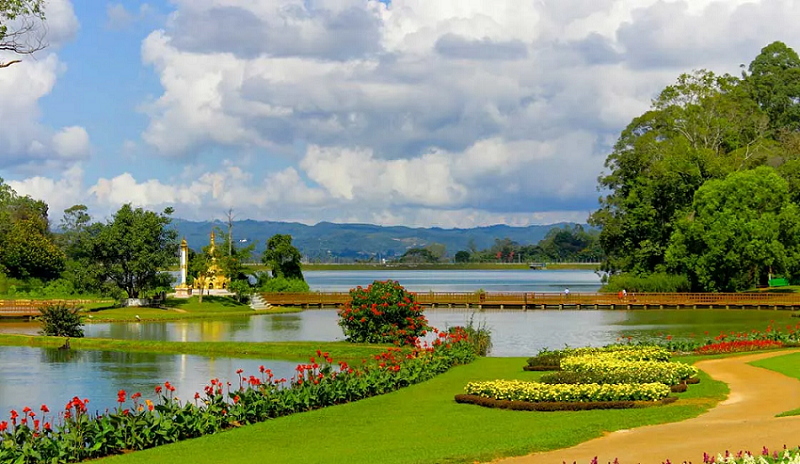

Magnificent places
1.Shwedagon Pagoda
Shwedagon pagoda known as the Great Dagon Pagoda and the Golden Pagoda is a gilded stupa located in Yangon, Myanmar
Shwedagon east gate west of the Royal Lake Yangon,
Shwedagon is more than a national symbol. It is Myanmar's Fort Knox. Its main stupa alone is plated with nearly 22,000 solid gold bars, and estimates of the pagoda's total gold range from 9 to 60 tonnes. The official reserve of the Republic of the Union of Myanmar, for comparison, is 7.4 tonnes.
2.Pyin-OO-Lwin National Park

The National Kandawgyi Botanical Gardens is a 177 hectare botanical garden located in the Alpine town of Pyin U Lwin, Burma, situated at an elevation of 1000 metres and 69 km by road from Mandalay.
The current official name is National Kandawgyi Garden.
3.Hpa-An Zwe Ga pin Taung and Kan Thar Yar Lake
The terrain around Mount Zwegabin is flat to the north-west, but hilly to the south-east. Calculated from the variance of all elevation data from Viewfinder Panoramas, within 10 kilometers radius.Mount Zwegabin is the highest point in the region. The area around Mount Zwegabin, is quite densely populated, with 155 inhabitants per square kilometer.
The ruined stupas at nearby Nyaung Ohak have been reclaimed by forest. Maing Thauk village is split between land and water, with a wooden bridge connecting the two halves.
Khan Thar Yar Lake is exist nearby the Zwe Ga pin Taung.
5.Goteik Viaduct

The Goteik viaduct also known as Gohteik viaduct is a railway trestle in Nawnghkio, western Shan State, Myanmar. The bridge is between the two towns of Pyin Oo Lwin, the summer capital of the former British colonial administrators of Burma, and Lashio, the principal town of northern Shan State.
6.Kalaw Hill town
Kalaw is a hill town in the Shan State of Myanmar. It is located in Kalaw Township in Taunggyi District.
Kalaw is famous for hiking and trekking. Many trekking trails ranging from nearby places to Inle Lake and Pindaya.
7.Bagan Pagoda
Bagan is a historical city scattered with over 5000 temples and Pagodas covering an area of 40 square kilometers. This fascinating place was called Pagan in the past and it was built between the 11th and 13th centuries.
With their own story to tell, Bagan’s Pagodas are at their best during dawn and dusk when the sun comes up or down highlighting the magical beauty of the ruins.
Bagan is an ancient city and a UNESCO World Heritage Site in the Mandalay Region of Myanmar. From the 9th to 13th centuries, the city was the capital of the Bagan Kingdom, the first kingdom that unified the regions that would later constitute Myanmar. During the kingdom's height between the 11th and 13th centuries, more than 10,000 Buddhist temples, pagodas and monasteries were constructed in the Bagan plains alone, of which the remains of over 2200 temples and pagodas survive.
8.Mandalay Moat
The city was built as a palace-fortress in the form of a perfect square with walls 3 km (2 miles) long, surrounded by a 70m-wide moat on all four sides. This is a view of the moat and city walls which are crowned at intervals with ornate wooden watchtowers.
9.U Bein Bridge
U Bein Bridge is a crossing that spans the Taungthaman Lake near Amarapura in Myanmar.
The 1.2-kilometre bridge was built around 1850 and is believed to be the oldest and longest teakwood bridge in the world.
10.Bagan Palace
As you may know, Bagan is famous for its thousands of old bagodas and stupas stretching into the horizon.
Bagan was the capital of the Kingdom of bagan from the 9th to the 13th centuries, a period in which some 50 Buddhist kings ruled the bagan Dynasty.
11.Pyin-Oo-Lwin Clock Tower
Purcell Tower stands in the heart of the town, Pyin Oo Lwin.
The clock was one of the few made in 1934 by Gillete and Johnson Co. of England in commemoration of the Silver Jubilee of the reign of King George V of Britain.